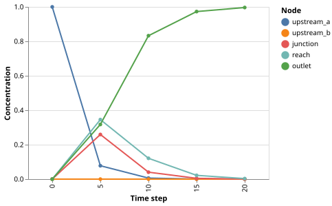

Pollutant Spread in a River Network
The Problem
- River networks branch and merge: pollutant introduced at one node is carried to all nodes reachable from it
- We want to track the concentration at each node over time to predict when downstream communities are affected
- This is a flow network problem: a directed graph where edges carry material from node to node
Representing the River Network
- The network is a directed tree: water flows from headwaters to an outlet, with no cycles
- Nodes represent measurement stations or junctions; edges represent river reaches
- Edge weights record relative discharge (i.e., mean flow rate)
# River network: 5 nodes in a directed tree (upstream to downstream).
# Node indices correspond to NODE_NAMES.
NODE_NAMES = ["upstream_a", "upstream_b", "junction", "reach", "outlet"]
# Node 4 (outlet) is the sink: pollutant that arrives there is not transported further.
SINK = 4
# Initial spill: unit concentration at upstream_a only.
SPILL_NODE = 0
# Fraction of concentration at each non-sink node transported downstream per step.
# At 0.4, roughly 40 % of mass moves forward each time step.
TRANSPORT_RATE = 0.4
N_STEPS = 20
SNAPSHOT_INTERVAL = 5
def build_network():
"""Return a directed graph representing the river network.
Edge weights represent relative mean discharge (arbitrary units) and
are used for visualization only; transport uses a uniform rate.
"""
G = nx.DiGraph()
G.add_nodes_from(range(len(NODE_NAMES)))
# upstream_a and upstream_b both drain into the junction.
G.add_edge(0, 2, weight=3.0)
G.add_edge(1, 2, weight=5.0)
# junction drains to reach, reach drains to outlet.
G.add_edge(2, 3, weight=8.0)
G.add_edge(3, 4, weight=8.0)
return G
upstream_a(node 0) is the spill siteupstream_b(node 1) is an uncontaminated headwater- Both drain into
junction(node 2), which drains toreach(node 3), which drains tooutlet(node 4) - Node 4 is the sink
- Pollutant that arrives there accumulates and is not transported further
Why is a river network represented as a directed graph rather than an undirected graph?
- Water can flow in either direction between any two connected nodes.
- Wrong: rivers flow in one direction, from higher to lower elevation; edges must be directed to encode this.
- The direction of each edge encodes which way water (and pollutant) flows.
- Correct: directed edges from upstream to downstream nodes capture the unidirectional nature of river flow.
- Directed graphs are always faster to compute with than undirected graphs.
- Wrong: the choice of directed vs. undirected is based on the physical system, not computational speed.
- Edge weights cannot be stored on undirected graphs.
- Wrong: undirected graphs support weighted edges just as directed graphs do.
The Transport Model
- At each time step, a fraction
TRANSPORT_RATEof the concentration at each non-sink node moves downstream - The remaining fraction $(1 - \text{TRANSPORT_RATE})$ stays at the node (representing mixing and retention in the water column)
- For a node $v$ with upstream neighbours $u_1, u_2, \ldots$ each contributing fraction $f_k$, the update rule is:
$$c_v^{n+1} = (1 - \alpha)\,c_v^n + \sum_k f_k\,c_{u_k}^n$$
- $\alpha = \text{TRANSPORT_RATE}$ and $f_k = \alpha / \text{(number of downstream neighbours of } u_k\text{)}$
- When a node drains into a single successor, $f_k = \alpha$
- When a node splits equally among two successors, each receives $\alpha / 2$
Building the Upstream Table
- Rather than building a matrix, we pre-compute the list of $(u, f)$ pairs for each node $v$, where $u$ is an upstream neighbour and $f$ is the fraction of $u$'s concentration that flows into $v$
- This list is empty for headwater nodes (no upstream neighbours) and for isolated nodes
def build_upstream(G):
"""Return upstream[v] = list of (u, fraction) pairs for each node v.
For each edge u -> v, the fraction of u's concentration that flows to v
in one step is TRANSPORT_RATE divided by the number of downstream
neighbours of u. A node with no upstream neighbours has an empty list.
"""
n = len(NODE_NAMES)
upstream = {v: [] for v in range(n)}
for u in range(n):
if u == SINK:
continue
succs = list(G.successors(u))
if not succs:
continue
fraction = TRANSPORT_RATE / len(succs)
for v in succs:
upstream[v].append((u, fraction))
return upstream
Put these steps in the correct order to fill in the upstream table for one non-sink node u.
- Find the list of downstream successors of u in the graph G
- Compute fraction = TRANSPORT_RATE / number of successors
- For each successor v, append (u, fraction) to upstream[v]
- Check that the fractions appended for u sum to TRANSPORT_RATE (conservation check)
In our 5-node tree every non-sink node has exactly one downstream successor. What fraction of its concentration does each non-sink node send downstream per step?
- 0.0
- Wrong: that would mean no pollutant is ever transported.
- TRANSPORT_RATE / 2
- Wrong: dividing by 2 would only apply if the node had two successors.
- TRANSPORT_RATE
- Correct: with one successor, fraction = TRANSPORT_RATE / 1 = TRANSPORT_RATE.
- 1.0
- Wrong: 1.0 would mean all concentration moves downstream and none is retained.
Running the Simulation
def simulate(G):
"""Simulate pollutant transport and return concentration snapshots.
For each time step the new concentration at node v is:
new_c[v] = c[v] * (1 - outflow_rate[v])
+ sum(fraction * c[u] for (u, fraction) in upstream[v])
where outflow_rate[v] is TRANSPORT_RATE for non-sink nodes (0 for the sink).
The sink retains everything it receives and sends nothing downstream.
"""
n = len(NODE_NAMES)
c = [0.0] * n
c[SPILL_NODE] = 1.0
upstream = build_upstream(G)
# Outflow rate for each node: TRANSPORT_RATE for non-sink nodes that have
# at least one downstream successor; 0 for the sink and for isolated nodes.
outflow = [0.0] * n
for u in range(n):
if u != SINK and list(G.successors(u)):
outflow[u] = TRANSPORT_RATE
records = _snapshot(c, 0)
for step in range(1, N_STEPS + 1):
new_c = [0.0] * n
for v in range(n):
retained = c[v] * (1.0 - outflow[v])
inflow = sum(fraction * c[u] for (u, fraction) in upstream[v])
new_c[v] = retained + inflow
c = new_c
if step % SNAPSHOT_INTERVAL == 0:
records += _snapshot(c, step)
return pl.DataFrame(records)
def _snapshot(c, step):
return [
{"node": NODE_NAMES[i], "concentration": float(c[i]), "step": step}
for i in range(len(NODE_NAMES))
]
- For each time step and each node $v$,
retainedis the fraction staying put andinflowis the sum of fractions arriving from upstream neighbours - The loop saves a snapshot every
SNAPSHOT_INTERVALsteps so that only a small table is stored
Visualizing the Results
def plot(df):
"""Return an Altair line chart of concentration at each node over time."""
return (
alt.Chart(df)
.mark_line(point=True)
.encode(
x=alt.X("step:O", title="Time step"),
y=alt.Y(
"concentration:Q",
title="Concentration",
scale=alt.Scale(domain=[0.0, 1.0]),
),
color=alt.Color("node:N", title="Node", sort=NODE_NAMES),
)
.properties(width=350, height=250)
)

Testing
-
Mass conservation
- At every step, each unit of concentration is either retained at its node or forwarded to a downstream neighbour.
- No mass is created or destroyed, so the sum over all nodes must equal 1.0 throughout.
- Floating-point addition of 5 small numbers over 20 steps introduces rounding of at most $10^{-12}$.
-
Non-negativity
- Every update is a weighted sum of non-negative concentrations with non-negative fractions.
- Concentration cannot go negative; a negative value would indicate a code error.
-
Monotone decay at the spill node
upstream_ahas no upstream neighbours, so each step it retains only $(1 - \alpha)$ of whatever it holds.- Starting from $c_0 = 1$, its concentration decays as $(1 - \alpha)^n$, which is strictly decreasing.
-
Uncontaminated node stays zero
upstream_balso has no upstream neighbours and starts at zero concentration.- Each step it retains $(1 - \alpha) \times 0 = 0$, so it remains zero throughout.
-
Monotone accumulation at the outlet
- The outlet (sink) only receives mass and never releases it, so its concentration is non-decreasing.
-
Upstream fractions sum to transport rate
- For each non-sink node $u$ that has downstream successors,
the fractions stored in the upstream table must sum to exactly
TRANSPORT_RATE, confirming that all transported mass is accounted for
- For each non-sink node $u$ that has downstream successors,
the fractions stored in the upstream table must sum to exactly
from pollute import (
NODE_NAMES,
N_STEPS,
SINK,
SPILL_NODE,
TRANSPORT_RATE,
build_network,
build_upstream,
)
def _run(n_steps=N_STEPS):
"""Return concentration list after n_steps using the same loop as simulate."""
G = build_network()
upstream = build_upstream(G)
n = len(NODE_NAMES)
c = [0.0] * n
c[SPILL_NODE] = 1.0
# Outflow rates mirror those in simulate().
outflow = [0.0] * n
for u in range(n):
if u != SINK and list(G.successors(u)):
outflow[u] = TRANSPORT_RATE
for _ in range(n_steps):
new_c = [0.0] * n
for v in range(n):
retained = c[v] * (1.0 - outflow[v])
inflow = sum(fraction * c[u] for (u, fraction) in upstream[v])
new_c[v] = retained + inflow
c = new_c
return c
def test_mass_conservation():
# Each step, every unit of concentration either stays at its node or moves
# to a downstream neighbour. No mass is created or destroyed, so the total
# must equal 1.0 throughout. Floating-point rounding in repeated addition
# can accumulate, but for 5 nodes and 20 steps the error stays below 1e-12.
c = _run()
assert abs(sum(c) - 1.0) < 1e-12
def test_all_nonnegative():
# Every update is a weighted sum of non-negative values with non-negative
# weights, so concentration cannot go negative at any node or step.
G = build_network()
upstream = build_upstream(G)
n = len(NODE_NAMES)
c = [0.0] * n
c[SPILL_NODE] = 1.0
outflow = [0.0] * n
for u in range(n):
if u != SINK and list(G.successors(u)):
outflow[u] = TRANSPORT_RATE
for step in range(N_STEPS):
new_c = [0.0] * n
for v in range(n):
retained = c[v] * (1.0 - outflow[v])
inflow = sum(fraction * c[u] for (u, fraction) in upstream[v])
new_c[v] = retained + inflow
c = new_c
assert all(x >= 0.0 for x in c), f"negative concentration at step {step + 1}"
def test_spill_node_decreases():
# upstream_a (node 0) has no upstream neighbours, so every step it loses
# TRANSPORT_RATE of whatever concentration it holds and gains nothing back.
# Its concentration must be strictly decreasing from its starting value of 1.
G = build_network()
upstream = build_upstream(G)
n = len(NODE_NAMES)
c = [0.0] * n
c[SPILL_NODE] = 1.0
outflow = [0.0] * n
for u in range(n):
if u != SINK and list(G.successors(u)):
outflow[u] = TRANSPORT_RATE
prev = c[SPILL_NODE]
for _ in range(N_STEPS):
new_c = [0.0] * n
for v in range(n):
retained = c[v] * (1.0 - outflow[v])
inflow = sum(fraction * c[u] for (u, fraction) in upstream[v])
new_c[v] = retained + inflow
c = new_c
assert c[SPILL_NODE] < prev
prev = c[SPILL_NODE]
def test_uncontaminated_node_stays_zero():
# upstream_b (node 1) starts at zero concentration and has no upstream
# neighbours feeding into it. It loses TRANSPORT_RATE each step, so its
# concentration is 0 * (1 - TRANSPORT_RATE)^step = 0 throughout.
c = _run()
assert c[1] == 0.0 # upstream_b is never contaminated
def test_outlet_nondecreasing():
# The outlet (sink) only receives mass; it never sends mass downstream.
# Its concentration therefore cannot decrease between steps.
G = build_network()
upstream = build_upstream(G)
n = len(NODE_NAMES)
c = [0.0] * n
c[SPILL_NODE] = 1.0
outflow = [0.0] * n
for u in range(n):
if u != SINK and list(G.successors(u)):
outflow[u] = TRANSPORT_RATE
prev = c[SINK]
for _ in range(N_STEPS):
new_c = [0.0] * n
for v in range(n):
retained = c[v] * (1.0 - outflow[v])
inflow = sum(fraction * c[u] for (u, fraction) in upstream[v])
new_c[v] = retained + inflow
c = new_c
assert c[SINK] >= prev
prev = c[SINK]
def test_upstream_fractions_sum():
# For each non-sink node u that has downstream neighbours, the total
# fraction of concentration it sends out equals TRANSPORT_RATE exactly.
# This can be checked by summing the fractions stored in build_upstream.
G = build_network()
upstream = build_upstream(G)
# Collect total outflow fraction assigned to each source node.
sent = {u: 0.0 for u in range(len(NODE_NAMES))}
for v in range(len(NODE_NAMES)):
for (u, fraction) in upstream[v]:
sent[u] += fraction
for u, total in sent.items():
if total > 0.0:
assert abs(total - TRANSPORT_RATE) < 1e-12, (
f"node {NODE_NAMES[u]} sends {total}, expected {TRANSPORT_RATE}"
)
Starting from $c = [1, 0, 0, 0, 0]$ and using TRANSPORT_RATE = 0.4, what is the concentration at
junction (node 2) after exactly 2 time steps?
Give your answer to two decimal places.
Hint: trace through the update rule step by step. At step 1, junction receives $0.4 \times c_0[\text{upstream_a}]$ from upstream_a. At step 2, junction retains $0.6$ of its step-1 value and receives another inflow from upstream_a.
Exercises
Adding a tributary
Add a sixth node tributary (node 5) that joins at reach (node 3) with edge weight 2.0.
Update build_network and rerun the simulation.
Does test_mass_conservation still pass?
Does the pollutant reach the outlet faster or slower?
Variable transport rate
Replace the uniform TRANSPORT_RATE with per-edge rates stored in a dictionary keyed by (src, dst).
Assign higher rates to high-flow edges (e.g., rate proportional to edge weight / max edge weight).
Modify build_upstream to use per-edge rates and update simulate accordingly.
How does the arrival time at the outlet change compared to the uniform-rate model?
Continuous spill
Change the initial condition so that upstream_a receives a constant input of 0.1 concentration units per step
(a continuous source rather than an instantaneous spill).
Modify simulate to add this source term to new_c[SPILL_NODE] after each update step.
Is mass still conserved?
At what step does the outlet concentration stabilise?
Two-spill comparison
Run two separate simulations: one with the spill at upstream_a and one with a spill at upstream_b.
Add the two concentration lists at each step.
Compare the result to a single simulation that starts with concentration 1.0 at both headwater nodes simultaneously.
Are the results identical?
Explain why in terms of the structure of the update rule.